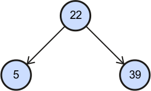

Binary Search Tree
Graphic elements
There are listed all graphic elements used in this application and their meanings.
| Graphic | Meaning | Description |
|---|---|---|

|
Node | Node with his value. |

|
Selected node | Selected node is highlighted with red stroke. You can select a node by clicking on it. |

|
Edge | An edge is a reference from one node to another. Referenced node is called child of referring node. Referring node is called parent of referenced node. |
|  | Parent and his children | In binary trees there are maximum two children of any node - left child and right child. |

|
Comparison signs | Very often algorithms compare two nodes (their values). In that case one of this sign will be shown in the middle of them. |

|
Continue in parent/ |
Algorithms usually traverse a tree or recursively call themselves on one child of just processing node. These graphic elements will show you which node is next in line. |

|
No left/ |
A node do not have left/right child. |
 |
Enter/ |
A start/end visualisation of an algorithms that traverse a tree. |

|
Came from left/ |
Sometimes it is important if an algorithm came from left or right child. These arrows indicate that the condition is satisfied. |
| Did not come from left/ |
As previous, but the condition is not satisfied. | |
 |
Array | A tree can be represented by an array, can be transformed to the array or can be build from the array. Array is indexed (1, 2, 3, ... 7) and has values (2, 5, 22, 39, 44). Last two indexes are still empty. |